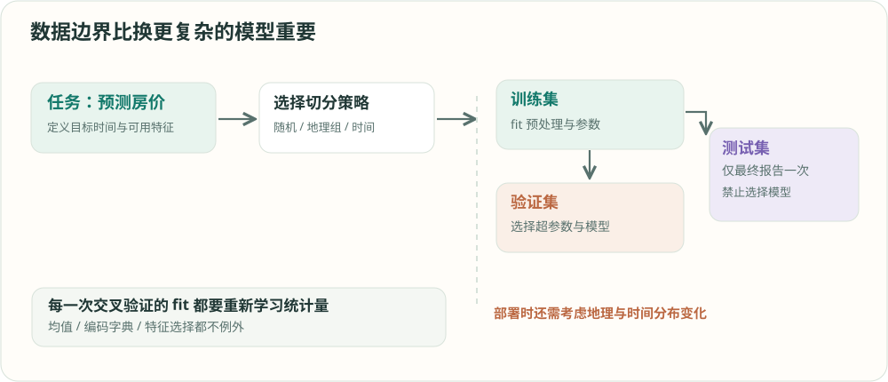
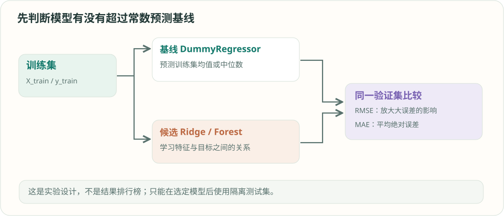
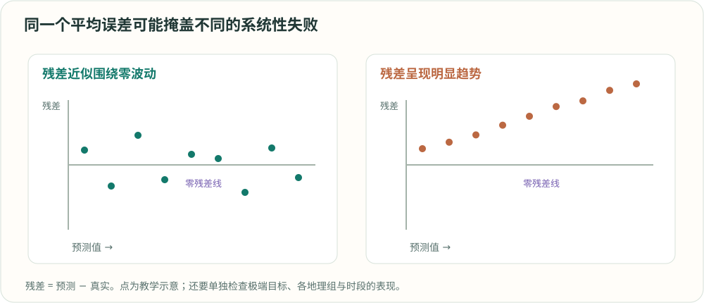

从数据到模型：构建可复现的回归项目
把“预测住宅价格”从一句需求变成受时间与空间约束的实验：定义目标、拆分数据、建立基线、比较候选、诊断误差，最后保存可追溯的 Pipeline。
01 · 问题定义先于加载数据
假设要预测某个地区未来一笔住宅交易的价格。模型输入必须是预测发生时确实已经知道的房屋属性与上下文，目标是随后才观察到的交易价格。同一地区的记录相似、房价随时间变化，因此随机打乱数据取得的测试分数未必能够代表“新区域”或“未来交易”的误差。
在公开的 California Housing 数据中，目标表示 1990 年人口普查时期加州区域的房价中位数，单位为十万美元。它是区域级历史数据，**不是单套住宅的现价**，更不能把它当作当代房地产市场的直接预测基准。这里选择先用 scikit-learn 自带、无须下载的 load_diabetes 回归数据练习完整工程步骤，再在独立的可选脚本上运行 California Housing 真数据，避免把下载失败误当算法问题。
数据定义边界：California Housing 的房价目标存在截断，且样本具有空间相关性；在该数据集上取得的分数不能直接推断到当前房价、单套房源交易或未观测地区。
02 · 从原始数据建立不可穿越的边界
训练、验证和测试的角色应当在模型选择前冻结。训练集用于拟合填充器、标准化器和回归参数；验证集用于选择模型与超参数；测试集只在全部选择完成后做一次独立报告。如果输入有多次来自同一街区的记录，可按地理组切分；若是预测将来的价格，则应采用时间切分与时间上可用的特征。

普通随机划分适合教学验证流程，却不能替代符合业务分布的外推评估。地理分组也不是“保证泛化”的万能方法：分组粒度、训练集覆盖范围和政策变化都会影响误差的代表性。
03 · 先建立不会学习特征的基线
回归项目至少应设置一个常数预测基线：例如 DummyRegressor(strategy="mean") 在训练集上学到目标均值，之后不使用输入特征直接预测该值。这揭示了模型是否真正学到了特征中能被验证集利用的结构。还可用中位数作为 MAE 导向的基线，但不同基线对应的损失并不完全相同。

候选可以是线性 Ridge 回归与具有非线性分割能力的随机森林。前者通常要考虑特征尺度，后者在普通数值特征上通常不要求标准化。它们都应在训练集上拟合，而不是为了“公平”把验证集偷偷合入训练数据。
04 · 让误差有明确的物理含义
设真实目标为 yᵢ，预测值为 ŷᵢ，残差约定为 eᵢ=ŷᵢ−yᵢ。MAE 是绝对残差平均，RMSE 是残差平方平均后开根。两者单位都与房价目标一致，RMSE 对很大的错误格外敏感。
在测试集上只报告一个均值可能掩盖结构性失败。还应按真实价格区间、区域、时间或合理的业务群体分组，查看偏差与误差分布。对数据稀疏的子群，不应把少数样本的表现描述成稳定的总体结论。

05 · 可运行的离线端到端基线实验
下面只使用 scikit-learn 自带的回归数据。先做训练、验证、测试 60/20/20 划分；三个模型各自使用训练数据，验证集评估后选分数最小者，再仅报告一次测试误差。Pipeline 保证 Ridge 的标准化器只在训练集 fit。输出数值依赖具体版本，因此用不变性质作断言，不预写实验结果。
import numpy as np
from sklearn.datasets import load_diabetes
from sklearn.dummy import DummyRegressor
from sklearn.ensemble import RandomForestRegressor
from sklearn.linear_model import Ridge
from sklearn.model_selection import train_test_split
from sklearn.pipeline import make_pipeline
from sklearn.preprocessing import StandardScaler
from sklearn.metrics import mean_absolute_error, mean_squared_error
X, y = load_diabetes(return_X_y=True)
Xdev, Xtest, ydev, ytest = train_test_split(
X, y, test_size=0.20, random_state=17)
Xtrain, Xval, ytrain, yval = train_test_split(
Xdev, ydev, test_size=0.25, random_state=17)
models = {
"constant": DummyRegressor(strategy="mean"),
"ridge": make_pipeline(StandardScaler(), Ridge(alpha=10.0)),
"forest": RandomForestRegressor(
n_estimators=64, max_depth=5, min_samples_leaf=3, random_state=17),
}
validation = {}
for name, model in models.items():
model.fit(Xtrain, ytrain)
pred = model.predict(Xval)
validation[name] = float(np.sqrt(mean_squared_error(yval, pred)))
print("validation RMSE:", validation)
chosen_name = min(validation, key=validation.get)
chosen = models[chosen_name]
test_pred = chosen.predict(Xtest)
print("selected:", chosen_name)
print("held-out MAE:", mean_absolute_error(ytest, test_pred))
print("held-out RMSE:", np.sqrt(mean_squared_error(ytest, test_pred)))
assert len(test_pred) == len(ytest)
assert all(v >= 0 and np.isfinite(v) for v in validation.values())需要 Python 3.10+、NumPy 与 scikit-learn。该实验是一个真实数据集上的工程教学演示，不是医疗预测产品，也不是 California Housing 的结果。通过验证集选模型后，若要重新合并训练与验证数据来拟合模型，应先固定所有选择，再做单独的重训练流程；上面为了保持步骤可核查，没有执行那一步。
06 · California Housing：网络数据的完整外部项目
如果可以访问互联网，运行独立脚本 examples/06_california_housing.py。脚本使用官方 fetch_california_housing，把经纬度量化为地理分组，采用两次 GroupShuffleSplit 获取互不重叠的训练、验证、测试组，训练常数基线与候选模型，并输出组数、验证结果与最终测试结果；最后使用 joblib 保存获选模型。数据下载、空间划分和模型保存均明确可观察，没有用合成样本冒充加州数据。
使用命令 python examples/06_california_housing.py。依赖 NumPy、scikit-learn、joblib；首次下载可能需要网络。量化地理网格是一种教学切分设计，不意味着已经符合生产部署的空间与时间要求。反序列化模型只应加载可信文件；joblib 的 pickle 类格式在加载不可信输入时有代码执行风险。
07 · 怎样把实验交付给另一个人
一个可复核项目应记录：数据的来源、时间范围和许可证；目标及其单位；切分方案与分组键；预处理和模型版本；随机种子、超参数与评价指标；误差分组审查；模型文件和运行环境。模型保存并不意味着完成了部署，需要额外监控输入分布、预测分布、失败率和模型效益。
最有价值的复盘不止是“哪一个分数最低”，还包括：为什么这个切分能代表未来任务？如果替换地区或时间，哪条假设最可能被破坏？